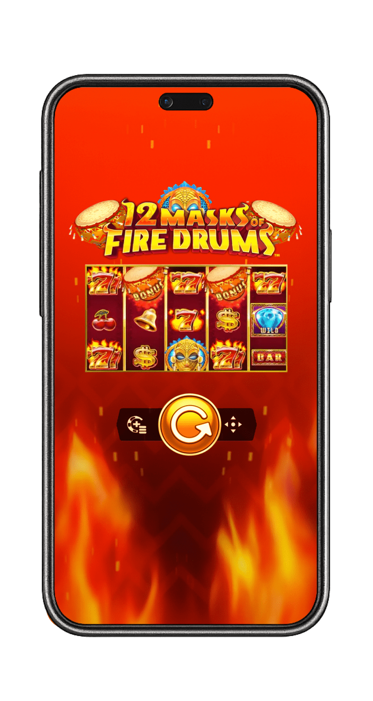
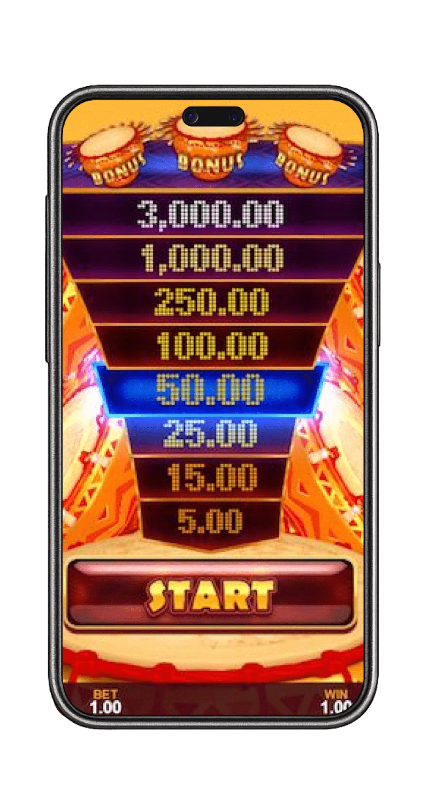

The first and most important step on your fiery adventure is finding the right place to play. A top-tier online casino will always offer a free-play version of its most popular games, allowing you to test the waters without any commitment. After extensive research, we have identified the premier online casinos that not only feature the incredible 12 Masks of Fire Drums slot but also provide a seamless and fully-featured demo experience. These are the platforms where you can learn the rhythm of the drums risk-free.
12 Masks of Fire Drums: Free Spins & Demo Play!
Are you ready to feel the hypnotic rhythm of the tribal drums and unlock a cascade of fiery rewards without any risk? Prepare yourself for an unforgettable journey into the heart of a blazing jungle with the 12 Masks of Fire Drums demo. This spectacular slot, a brilliant creation from the minds at Gameburger Studios for the legendary Games Global platform, has taken the online gaming world by storm. It masterfully combines a vibrant, high-energy theme with the proven and beloved Epic Strike™ scatter jackpot mechanic, and the best part is, you can master it all for free.
The Best Sites to Play 12 Masks of Fire Drums Demo Free
What is the 12 Masks of Fire Drums Slot?
12 Masks of Fire Drums is a captivating 5-reel, 3-row video slot that operates on 20 fixed paylines. Developed by Gameburger Studios, a dynamic and innovative partner of the industry giant Games Global (formerly Microgaming), this game plunges players into a vibrant, African tribal theme. The entire aesthetic is built around the powerful imagery of mystical masks, tribal artifacts, and the hypnotic rhythm of ceremonial drums that pulse through the game's soundtrack, creating an incredibly immersive atmosphere from the very first spin.
At its core, the game is a proud and enhanced member of the "Masks of Fire" series, a collection of slots celebrated for its signature Epic Strike™ feature, often referred to as a scatter jackpot. This mechanic is the heart of the game, offering players the chance to win instant cash prizes by landing a specific number of Mask scatter symbols anywhere on the reels, independent of paylines. The more masks you land, the higher you climb the prize ladder displayed prominently to the left of the reels, with the ultimate prize of 2,000x your stake awarded for landing 12 masks.
This is complemented by a powerful Free Spins feature, complete with a prize multiplier, which is where the game's biggest potential is truly unlocked. The combination of these features makes every spin of the 12 Masks of Fire Drums slot a thrilling hunt for instant riches, a hunt you can perfect by playing the 12 Masks of Fire Drums demo.
Screenshots of the Fiery Gameplay
(This section is designed to feature a gallery of high-resolution screenshots. The images would showcase: 1. The main game interface of the
The Core Mechanics & Symbols
Despite its exciting features, the fundamental mechanics of 12 Masks of Fire Drums are intuitive and easy for players of all experience levels to grasp, especially when learning through the demo. Here is a detailed breakdown of the gameplay flow:
- Setting Your Bet: Before the drums start, you must select your wager for the spin. The game offers a wide betting range, typically from $0.20 to $60 per spin (or the equivalent in virtual credits in the demo). This makes it accessible for players to test different strategies.
- Spinning the Reels: Once your bet is locked in, you hit the spin button. The five reels will spin and come to a stop, revealing a new combination of symbols.
- Standard Winning Combinations: In the base game, standard wins are formed by landing three or more matching symbols on one of the 20 active paylines, starting from the leftmost reel. The paytable, found in the game's menu, details the payout for each symbol. Classic symbols like cherries and BARs are at the lower end, while the fiery "7" symbols (single, double, and triple) offer higher payouts.
- The Role of Special Symbols: The true magic of the game lies in its special symbols. The Diamond acts as the Wild symbol, substituting for all other symbols except the Mask and Free Spins scatters to help form winning lines. The Free Spins symbol (depicted as a tribal shield and spears) is your key to the 12 Masks of Fire Drums free spins bonus, while the golden Mask symbol is your ticket to winning the instant Epic Strike cash prizes.
Game Integrity and Fairness
You can play the 12 Masks of Fire Drums slot with complete confidence, knowing that its outcomes are governed by a certified Random Number Generator (RNG). This sophisticated algorithm ensures that every spin is an independent event, with results that are entirely random and cannot be predicted or manipulated. This applies to both the real money version and the 12 Masks of Fire Drums slot demo. Games Global and its partner studios like Gameburger are among the most respected and heavily regulated names in the industry, and their games undergo rigorous testing by independent agencies like eCOGRA to verify the fairness of the RNG.
Basic Terms You Need to Know
To fully master the game and understand the lingo, it helps to be familiar with a few key terms. Here are the essential concepts you'll encounter when you play 12 Masks of Fire Drums:
- Payline: A fixed line across the reels where matching symbols must land to create a standard win.
- Wild Symbol (Diamond): A special symbol that can substitute for any standard symbol to help form a winning combination.
- Scatter Symbol (Mask): The key to the Epic Strike feature. Landing 3 or more of these anywhere on the reels awards an instant prize.
- Free Spins Scatter (Shield): Landing three of these symbols on reels 2, 3, and 4 triggers the Free Spins Bonus Wheel.
- Epic Strike™: The branded name for the scatter jackpot feature. A ladder displaying the prizes for landing 3 to 12 Mask symbols is always visible.
- RTP (Return to Player): A theoretical percentage of all wagered money a slot is programmed to pay back to players over the long term.
Volatility (Variance): A measure of a slot's risk. 12 Masks of Fire Drums has medium volatility, offering a balanced gameplay experience.
Best Casinos for 12 Masks of Fire Drums Free Spins & Real Money (with Interac)
Choosing the right online casino is a critical part of the experience. A top platform will not only feature the game but also provide secure and convenient payment methods, like Interac, which is essential for many Canadian players. Here are the best online casinos to feel the beat of the 12 Masks of Fire Drums.

Rocketplay Casino
Rocketplay has surged in popularity thanks to its sleek, modern interface and its forward-thinking approach to banking. While it's especially known for its crypto-friendliness, it also offers a solid range of traditional payment methods, making it a versatile casino for the 12 Masks of Fire Drums slot.
- Extensive Game Library: Rocketplay boasts a massive library with thousands of titles from a plethora of leading providers, including the full suite from Games Global and its partners. This ensures you can easily find and play the 12 Masks of Fire Drums slot alongside a huge variety of other games. You can start with the 12 Masks of Fire Drums demo free play before switching to real money.
- Generous Bonus Structure: New players are often greeted with a generous welcome package that includes a deposit match and free spins. Rocketplay is also known for its ongoing promotions, a multi-tiered VIP program, and frequent slot tournaments, giving you plenty of extra value for your gameplay.
- Modern User Experience: The site features a slick, dark theme with intuitive navigation, making it incredibly easy to find your favourite games. Its mobile-optimized platform is fast and responsive, ensuring a flawless gaming session on any device.
Winspirit Casino
Winspirit focuses on creating a vibrant and engaging atmosphere for its players. It operates with a strong license and offers a well-curated catalogue of high-quality games, making it another excellent choice for your tribal adventure.
- High-Quality Game Selection: Winspirit maintains a strong partnership with Games Global, ensuring they have the latest and greatest titles, including 12 Masks of Fire Drums. Their library focuses on quality over sheer quantity, so you know you're getting a top-tier gaming experience. The 12 Masks of Fire Drums demo is readily available.
- Player-Friendly Bonuses: This casino is respected for its transparent and fair bonus terms. You can regularly find attractive welcome bonuses, valuable reload offers, and cashback deals that provide genuine value and can be used to extend your playtime on your favorite slots.
- Mobile-First Design: Winspirit's platform is built with mobile gaming as a priority. The interface is clean, fast, and perfectly adapted for smaller screens, allowing you to enjoy every spin of the 12 Masks of Fire Drums slot demo without compromise, no matter where you are.
LeoVegas Casino
Often hailed as the "King of Mobile Casino," LeoVegas is a multi-award-winning, global powerhouse that offers an unparalleled gaming experience, especially for players in markets like Canada where Interac is a must-have.
- Massive Game Portfolio: LeoVegas is home to a colossal library of over 2,500 games from the world's most elite software providers. As a key partner of Games Global, they feature the entire "Masks of Fire" series, making it a prime destination for this game.
- Convenient Interac Payments: LeoVegas fully supports Interac e-Transfer and Interac Online, providing Canadian players with a fast, secure, and incredibly convenient way to deposit and withdraw funds. This is a major advantage for local players.
- Industry-Leading Mobile App: The LeoVegas mobile app for both iOS and Android is the gold standard in the industry. It's lightning-fast, intuitive, and provides a flawless platform for playing the 12 Masks of Fire Drums slot.
Spin Casino
Spin Casino is a long-standing and highly respected name in the online casino world, with decades of experience. It has built a loyal following by focusing on high-quality games, excellent customer service, and a secure environment.
- A Hub for Games Global Titles: As a casino that has long prioritized Microgaming (now Games Global) content, Spin Casino is one of the most reliable places to find 12 Masks of Fire Drums and other classic titles from the developer.
- Interac-Friendly Banking: Like LeoVegas, Spin Casino caters heavily to the Canadian market and offers full support for Interac payments, making transactions simple and familiar for local players.
- Generous Welcome Offer: Spin Casino is famous for its substantial welcome bonus, which often extends over the first few deposits, giving new players a massive bankroll boost to start their gaming journey.
- Proven and Trustworthy: With a license from the MGA and certification from eCOGRA, Spin Casino has a long-established reputation for fairness, security, and player satisfaction, making it a safe bet for any player.
How to Choose the Perfect Casino?
While our recommendations are a fantastic starting point, you might want to evaluate other platforms. Use this comprehensive checklist to ensure you choose a safe and high-quality casino:
- Licensing and Regulation: This is non-negotiable. The casino must hold a valid license from a respected authority like the MGA or the UKGC.
- Security Measures: Ensure the site uses modern SSL encryption to protect your personal and financial information.
- Demo Game Availability: A good casino should always offer a 12 Masks of Fire Drums demo free play option so you can test the game.
- Bonuses and Promotions: Examine the terms and conditions, specifically the wagering requirements. A good casino offers ongoing promotions and a loyalty program.
- Payment Methods (including Interac): The casino should offer a variety of safe and reliable payment options. For Canadian players, the inclusion of Interac is a massive plus.
- Mobile Compatibility: A top-tier modern casino must have a fully optimized mobile website or a dedicated app.
- Customer Support: Reliable customer support is crucial, preferably 24/7 via live chat.
Player Reputation: Read reviews from other players on independent, trusted forums and review sites.
How to Play 12 Masks of Fire Drums: A Step-by-Step Guide
Getting started on your fiery quest is a quick and straightforward process. This guide will walk you through the exact steps, from finding the demo to understanding the gameplay loop.
- Find a Casino with the Demo: The first step is to choose one of the trusted casinos from our list above that offers the 12 Masks of Fire Drums demo free.
- Navigate to the Game: Once on the casino site, you don't even need to register to play the demo. Use the search bar and type in "12 Masks of Fire Drums".
- Launch the Demo Mode: Hover over the game's icon. You will typically see two options: "Play" (for real money) and "Demo" or "Play for Fun". Click on "Demo".
- Set Your Virtual Bet: The 12 Masks of Fire Drums slot demo will load with a large balance of virtual credits. Use the "+" and "-" buttons to adjust your bet size. It's a good practice to set it to a level you would comfortably play with real money to get a realistic feel for the game's performance.
- Understand the Interface: Take a moment to look around. On the left, you'll see the Epic Strike prize ladder. At the bottom, you'll find your balance, current bet, and the spin button. The "i" or menu button will open the paytable, which shows symbol values and feature rules.
- Spin the Reels: Hit the large spin button and watch the reels go.
- Look for Key Symbols: As the reels spin, your main goals are to land 3 or more Mask symbols for an instant Epic Strike win, or to land 3 Free Spins scatter symbols on reels 2, 3, and 4 to trigger the 12 Masks of Fire Drums free spins bonus round.
Following these steps is the core of how to play 12 Masks of Fire Drums. The beauty of the demo is that you can repeat this process as many times as you like, testing different bet sizes and getting a deep understanding of how often the features trigger.
The Ultimate Guide to the 12 Masks of Fire Drums Demo
The 12 Masks of Fire Drums demo is more than just a free version of the game; it's an essential tool for every smart player. It provides an identical gameplay experience to the real money version, with the same mechanics, features, RTP, and volatility. The only difference is that you are playing with a replenishing balance of virtual credits, meaning there is absolutely zero financial risk.

Why Play the 12 Masks of Fire Drums Slot Demo?
There are numerous strategic advantages to spending time with the 12 Masks of Fire Drums slot demo before wagering real money.
- Master the Mechanics: The demo is the perfect environment to learn the game's intricacies. You can see firsthand how the 20 paylines work, learn to recognize the value of different symbol combinations, and understand the specific conditions for triggering both the Epic Strike and Free Spins features.
- Experience the Volatility: Reading that a game has "medium volatility" is one thing; experiencing it is another. The demo allows you to feel the game's rhythm. You'll see how it balances frequent small wins with the potential for larger, less frequent payouts, helping you to manage your expectations for a real money session.
- Develop a Betting Strategy: Use the risk-free environment to test different betting strategies. See how a conservative, low-betting approach affects your virtual bankroll over hundreds of spins versus a more aggressive, high-betting strategy. This helps you find a comfortable level for your own budget.
- Trigger the Bonuses: The main reason to play is to see the bonus features in action. The demo allows you to spin until you trigger the 12 Masks of Fire Drums free spins wheel and see how the multipliers work. You can also get a feel for how often the Epic Strike prizes are awarded.
- Pure, Stress-Free Fun: Sometimes, you just want to enjoy the visuals, the hypnotic drum beat, and the excitement of a great slot without any financial pressure. The 12 Masks of Fire Drums demo free play is perfect for this.
Differences Between the Demo and Real Money Game
While the core gameplay is identical, it's important to understand the key differences when you switch from the demo to real money play.
The Thrill of Real Stakes
The most obvious difference is the emotional investment. While winning a 2,000x Epic Strike jackpot in the demo is fun, winning it with real money is a completely different, heart-pounding experience. The potential for real cash rewards adds a layer of excitement that the demo cannot replicate.
Access to Casino Bonuses and Promotions
When you play for real money, you unlock the full power of the online casino's promotional offerings. This includes:
- Welcome Bonuses: Your initial deposit is often matched with bonus funds, doubling your starting bankroll.
- Free Spins Offers: Casinos frequently offer free spins on popular games like this one.
- Loyalty Rewards: Every real money wager earns you loyalty points, which can be converted into cash or other perks.
These bonuses are not available when playing the 12 Masks of Fire Drums demo.
Identical Gameplay Mechanics
It is crucial to reiterate that the game itself does not change. The certified RNG, the RTP percentage, the hit frequency of the bonus features, and the paytable are exactly the same in both modes. A casino cannot make the demo version "looser" or "tighter" than the real money version. This ensures that the experience you have in the demo is a true representation of how the game will perform with real stakes.
Mastering the 12 Masks of Fire Drums Free Spins Feature
While the Epic Strike is the game's headline feature, the path to the biggest possible wins runs directly through the 12 Masks of Fire Drums free spins bonus round. This feature is your golden ticket to unlocking the game's full potential, primarily due to the inclusion of win multipliers.
Triggering the feature requires you to land three Free Spins scatter symbols (the shield and spears) simultaneously on the three middle reels (reels 2, 3, and 4). When this happens, the base game fades away, and you are presented with the magnificent Bonus Wheel.
You get one spin of this wheel to determine your fate. Each segment on the wheel contains a specific combination of a number of free spins and a win multiplier. The possible outcomes are:
- 10 Free Spins with a 2x Multiplier
- 12 Free Spins with a 2x Multiplier
- 15 Free Spins with a 2x Multiplier
- 20 Free Spins with a 2x Multiplier
- 25 Free Spins with a 3x Multiplier
- 30 Free Spins with a 3x Multiplier
The multiplier you win applies to all standard line wins and, most importantly, all Epic Strike prizes you hit during the bonus round. This is where the gameplay becomes truly explosive. For example, if you are lucky enough to land the top Epic Strike prize of 12 masks (worth 2,000x your bet) during a round with a 3x multiplier, that win is tripled to a massive 6,000x your stake! This synergy between the two main features is the key to the game's ultimate payout potential.
Furthermore, the Free Spins feature can be re-triggered. Landing another three scatter symbols during the bonus round will award you the same number of initial spins you won from the wheel, extending your chance to rack up multiplied wins without any additional cost.
Strategies for Winning
While online slots are games of chance, you can employ certain intelligent approaches to manage your bankroll and maximize your potential for a successful session.
The Bankroll Management Strategy
This is the most crucial strategy for any form of gambling.
- Set a Strict Budget: Before you play, decide on a specific amount of money you are prepared to lose. This must be discretionary income. Once you've set this budget, stick to it.
- Size Your Bets Appropriately: A good rule of thumb is to set your bet size to be a small fraction (e.g., 1/100th to 1/200th) of your total session budget. This allows you to withstand the game's medium volatility and gives you more spins, increasing your chances of triggering a bonus feature.
- Establish Clear Win/Loss Limits: Discipline is key. Set a realistic win goal and a hard loss limit. If you hit your win goal, cash out. If you deplete your budget, walk away. This prevents chasing losses.
The Spin Volume Strategy
Since the Epic Strike prizes are awarded by scatter symbols, they are not tied to paylines. This means your primary goal is to maximize the number of spins you make.
- Prioritize Longevity: Playing with smaller, more conservative bets allows you to extend your session and maximize your total number of spins for a given budget. The more spins you make, the more mathematical opportunities you have to land a high number of Mask symbols. The goal is to stay in the game long enough for a lucky spin with 9 or more masks to land.
Maximizing the Multiplier Strategy
This strategy recognizes that the free spins round holds the key to the largest wins.
- The Goal is the Wheel: Your primary objective in the base game should be to land the three Free Spins scatters. Every other win is a bonus that helps sustain your bankroll until you can trigger this powerful feature.
Understand the Multiplier's Power: Remember that the 3x multiplier triples everything, including the 2,000x Epic Strike prize. This is how the game's top payout is achieved. Any session where you trigger the free spins with a 3x multiplier is a session with massive potential.
Mobile Gaming: Playing the Slot Demo on the Go
The 12 Masks of Fire Drums slot demo is perfectly optimized for mobile play. The game is built on HTML5 technology, which means it runs flawlessly on any modern smartphone or tablet browser, with no download required. The interface automatically adjusts to your screen size, and the controls are adapted for touchscreens. This allows you to learn how to play 12 Masks of Fire Drums and enjoy the demo experience from anywhere.
Understanding the Game's Technical Details
A core part of any good slot review is to analyze its technical specifications. This helps you understand precisely what to expect when the reels start spinning.
|
Game Specification |
Details for 12 Masks of Fire Drums |
|
Game Title |
12 Masks of Fire Drums |
|
Provider |
Gameburger Studios / Games Global |
|
Reels/Rows |
5x3 |
|
Paylines |
20 (Fixed) |
|
RTP (Return to Player) |
96.10% |
|
Volatility / Variance |
Medium |
|
Maximum Win |
6,000x the total stake (via 3x multiplier) |
|
Bonus Features |
Epic Strike™ Scatter Jackpots, Free Spins with Multipliers |
|
Betting Range |
Typically $0.20 - $60 |
|
Platform Availability |
Desktop, iOS, Android (via Browser/Casino App) |
Legality and Fair Play
The legality of playing online slots depends on the laws of your specific country or jurisdiction. In many regions, including Canada, it is legal to play at licensed offshore online casinos. The casinos recommended in this guide—Rocketplay, Winspirit, LeoVegas, and Spin Casino—all operate under legitimate gambling licenses from respected authorities like the MGA or Curacao. This ensures they adhere to strict standards of fairness, security, and player protection. It is always the player's responsibility to be aware of and comply with the online gambling laws in their place of residence.
Player Reviews and Testimonials
- Liam, Toronto:"I love the Epic Strike games, and 12 Masks of Fire Drums is my favourite. I always start with the 12 Masks of Fire Drums demo to get a feel for it before playing for real. I play at LeoVegas because using Interac is so easy."
- Chloe, Vancouver:"The 12 Masks of Fire Drums free spins bonus is where it's at! I got 25 spins with a 3x multiplier the other day at Spin Casino and won over 800x my bet. It was incredible!"
- Markus, Calgary:"As a casual player, I find this to be one of the best 12 Masks of Fire Drums slots. The medium volatility is perfect. I used the demo to learn how to play 12 Masks of Fire Drums, and it made a huge difference."
Responsible Gaming
- Set Limits: Use the casino's tools to set daily, weekly, or monthly deposit limits, loss limits, and session time limits.
- Self-Exclusion: If you feel you are losing control, use the self-exclusion feature to take a break from gambling.
While the 12 Masks of Fire Drums slot is an incredibly entertaining game, it's vital to approach it with a responsible mindset. Gambling should always be a form of entertainment, not a way to make money. All reputable casinos provide tools to help you stay in control.
Seek Help: If gambling is negatively impacting your life, do not hesitate to seek help from professional organizations like GamCare or Gamblers Anonymous.
Conclusion
12 Masks of Fire Drums is a triumphant entry in the world of online slots, delivering a high-energy, feature-packed experience that appeals to all types of players. Its brilliant combination of the instant-win thrill of the Epic Strike™ mechanic and the massive potential of the free spins multiplier creates a perfectly balanced and endlessly engaging game.
By starting with the 12 Masks of Fire Drums demo free play, you can master every aspect of the game without risk. You'll learn how to play 12 Masks of Fire Drums, understand the nuances of the Epic Strike feature, and feel the power of the 12 Masks of fire drums free spins bonus. When you're ready, you can transition to a top-tier casino like Rocketplay, Winspirit, LeoVegas, or Spin Casino for a chance at real rewards. It's time to feel the beat—your fiery adventure awaits!